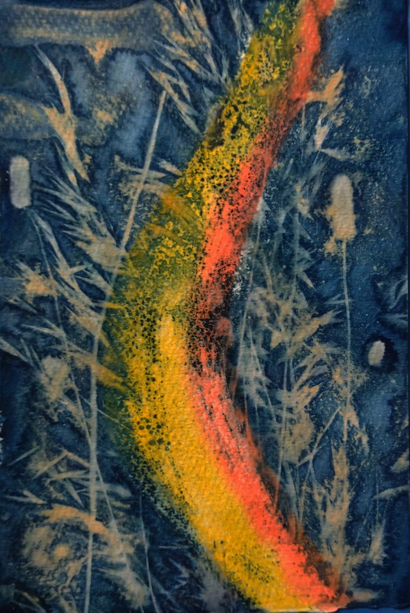
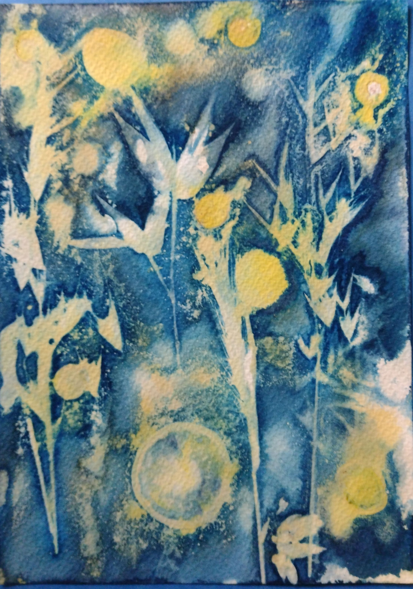
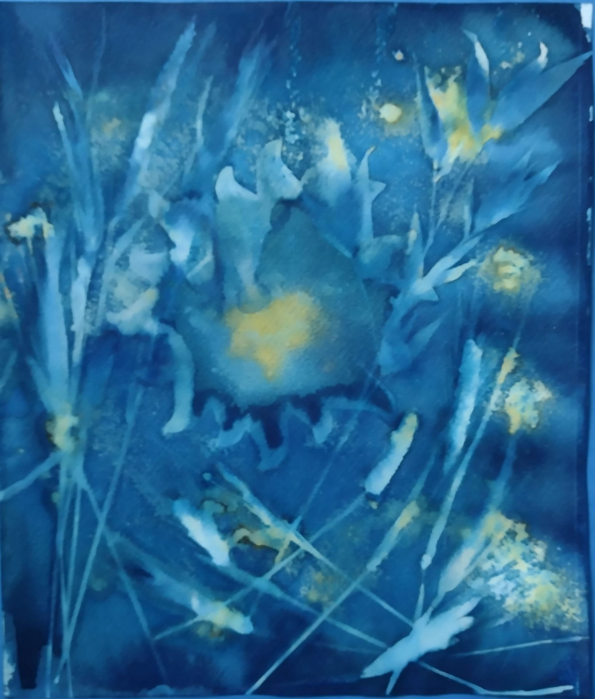
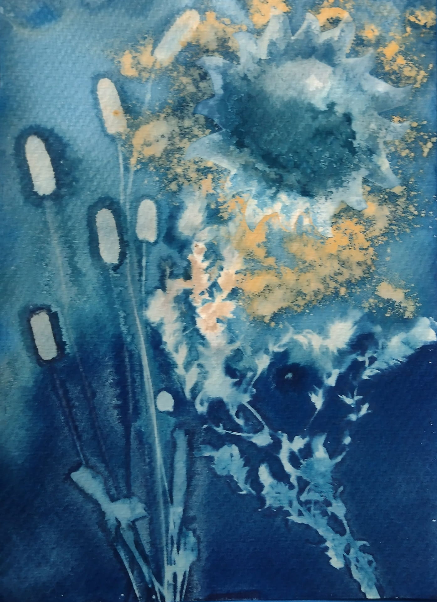
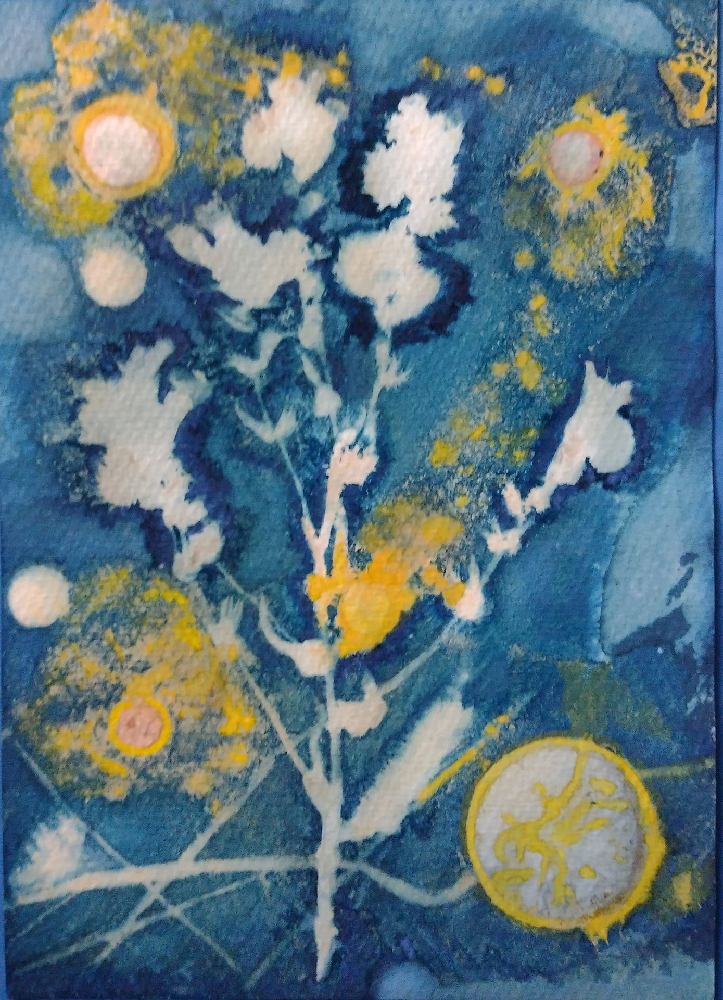
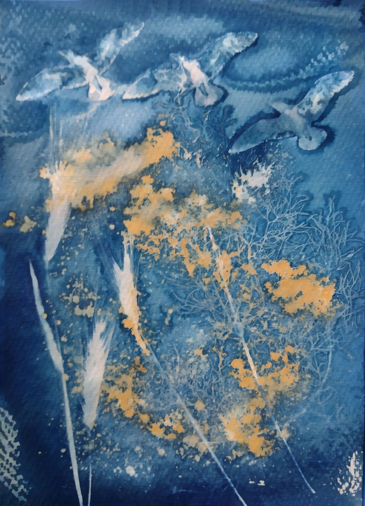
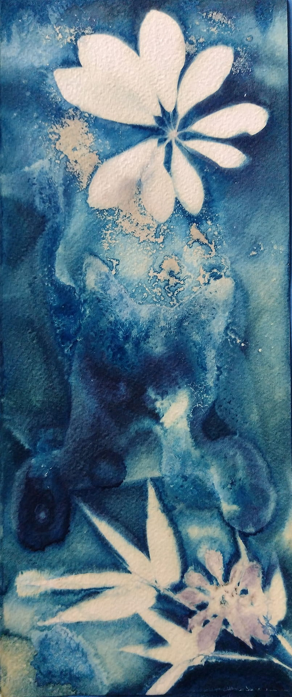

My cyanotypes are originals, created beneath the sun of Tenerife —
experimental mixed-media works by Berlin - based artist
Matilde Cánepa González.
Cyanotype came to me as an experiment I had not planned, but could
not resist. On Tenerife, where the sunlight has a particular weight
and clarity, I began placing plants, leaves, and organic textures
onto light-sensitive paper — and let
the sun do what it does: reveal, burn, preserve. I prepare, I
expose, I wait. And then the image appears — as if it had always
been there, hidden in the blue. Each cyanotype is unique, born from
the encounter between organic material, light, and time.






